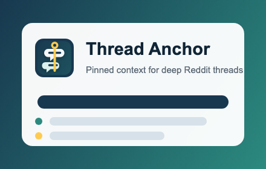

Thread Anchor
Chrome ExtensionThread Anchor pins the original post and parent-comment chain above Reddit, so you can follow a deep conversation without constantly scrolling back for context.
Get Thread Anchor
What it does
Click any Reddit comment to pin its context above the page. Thread Anchor displays the original post and every available parent comment, then keeps that compact trail in view while you read.
- Works on old.reddit.com and reddit.com comment pages
- Click a pinned row to jump back to that post or comment
- Choose how many parent rows to display
- Use compact mode, dark/light/automatic themes, or custom colors
- Runs entirely in the browser with no account required
Privacy Policy
Thread Anchor does not sell, share, or transmit personal data or Reddit page content to the developer or any third party.
The extension accesses and processes the visible post and comment structure in the current Reddit tab only to build its sticky context header. That content is not retained after it is needed to render the header and is not transmitted off-device by the extension.
Thread Anchor stores only your preferences: whether the context header is enabled, the number of parent comments to show, compact mode, theme choice, and custom colors. These preferences are handled by Chrome extension storage and may sync through Chrome Sync when enabled.
Terms of Use
Thread Anchor is provided under the MIT License, without warranty. Use it at your own discretion. It is an independent browser extension and is not affiliated with Reddit.